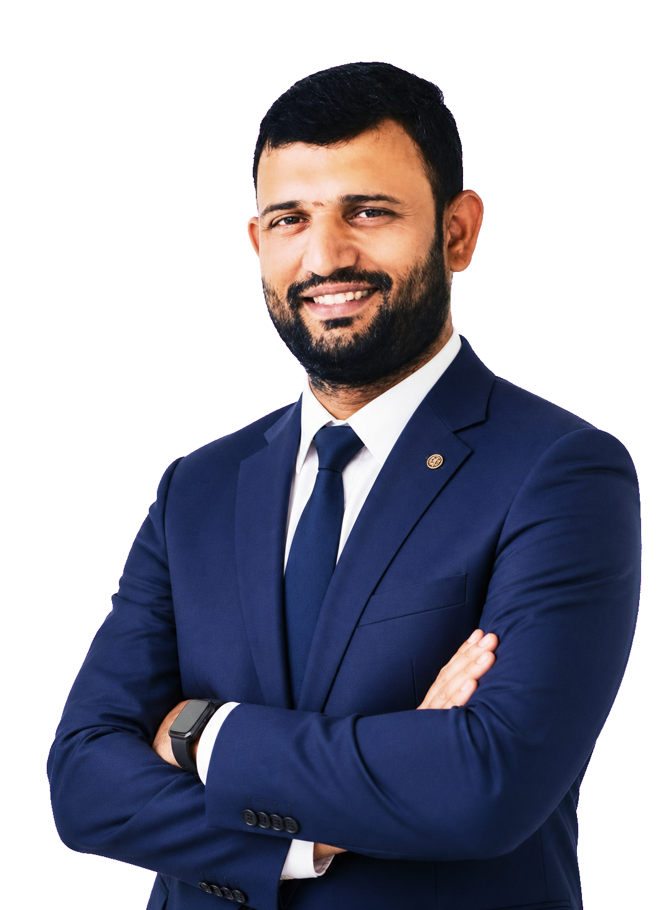
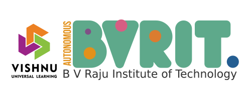
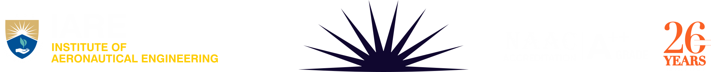
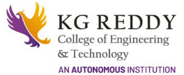
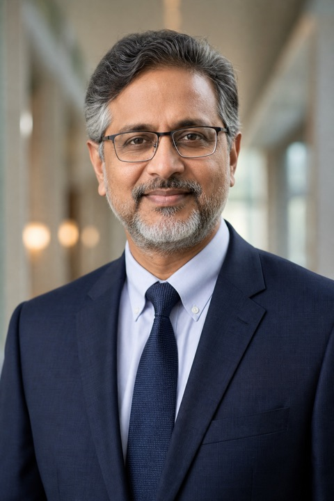
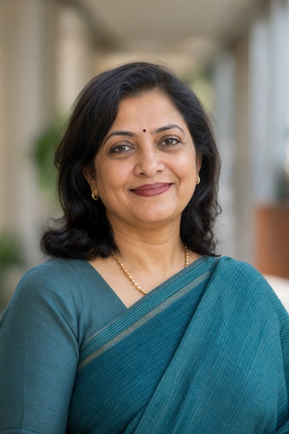
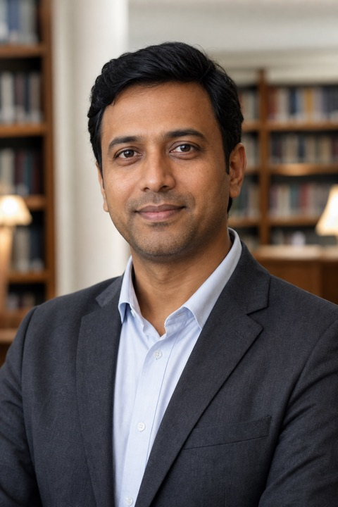

Dr. M.R.S. Suryanarayana Reddy
- Admissions Strategist
- Brand Building Expert
- Academic Leader
- Speaker & Researcher

Featured Interview
MBA or PGDM?
Admissions and placement insights
Watch
About Me
Passionate about education. Committed to impact.
Dr. Reddy is a higher education leader and institutional growth strategist with more than 18 years of experience across admissions, branding, academic governance, student recruitment, CRM-led decision-making, and organizational development. He currently serves as Professor & Director - Admissions & Brand Building at Vishwa Vishwani.
Know More About MeExperience

2008 - 2012
Assistant Professor
2012 - 2019
Training Officer & Assistant Professor

2019 - 2021
Dean - Entrepreneur Leadership & Brand Building

2021 - 2024
Associate Professor & Dean - Admissions & Brand Building
2024 - Present
Professor & Director - Admissions
Awards & Recognitions
Interviews & Media
Academic Milestones
National Initiative
Study India Nodal Officer
Represented MBU for the Ministry of Education initiative from 2021 to 2024.
Curriculum Leadership
Board of Studies Member
Contributed management studies expertise across three engineering colleges.
Academic Governance
Academic Council Member
Supported academic governance at KG Reddy College of Engineering & Technology.
Innovation Credential
Advanced Level Certified
Certified Institution Innovation Ambassador through MHRD.
Skill Development
Resource Coordinator
Coordinated institutional initiatives with AP State Skill Development Corporation.
Research Recognition
Best Paper Awards
Received best paper recognition at two international conferences.
Paper Publications
Google Scholar Profile-
Hybridizing technology management and knowledge management to spur innovation: A system dynamics approach 2023 | Organizations and Markets in Emerging Economies 14 (3), 696-720 | 10 citations
-
Work place expectations of Gen-Z: An empirical study 2024 | Google Scholar record | 9 citations
-
Impact of General Climate, HRD Mechanism and 'Octapace' Culture on Employee Job Satisfaction 2019 | SUMEDHA - Journal of Management 8 (1), 69-78 | 9 citations
-
Impact of Talent Management on Organisational Performance - Mediating Role of Talent Acquisition, Talent Retention, and Employee Engagement 2022 | Journal of Positive School Psychology 6 (11), 700-706 | 8 citations
-
Mediation Effect of HRD Mechanism between OCTAPACE Culture and Job Satisfaction - A Study 2019 | International Journal of Management Studies 6 (1(1)), 47-53 | 5 citations
-
Ethnobotanical survey in common plants of medicinal usage in tribal communities of Naikpods and Parthan of different mandals of Adilabad district, Telangana State, India 2015 | Int J Innov Pharm Sci Res 3 (10), 1500-1512 | 5 citations
-
Decision Tress Analysis on Employee Job Satisfaction and HRD Climate: the Role of Demographics 2019 | International Journal of Management Studies 6 (2(1)), 22-28 | 4 citations
Workshops Attended
-
Courageous Principals Leadership Training Program Deloitte University, Hyderabad | May 2024
-
Faculty Development Program on Digital Marketing Infosys, Mysore | Nov 2024
-
Research Methods and Data Analysis IIM Bodh Gaya | Apr 2021
-
Multivariate Data Analysis for Advanced Research AICTE FDP, Bhubaneswar | Dec 2017
Articles & Blogs
LinkedIn- Dinamalar KalvimalarAEDP: Bridging the Gap Between Education and Employment
- BW EducationFuture-Ready Managers Need Future-Ready Education
- India Today Best CollegesPreparing India's Next-Gen Engineers: The Power of Apprenticeship-Based Learning
- BW EducationWhy AI Education Needs Structural Reform
- LinkedIn ArticleWhy Some Private B-Schools in India Are Stuck in a Time Warp
- LinkedIn ArticleTelangana's Engineering Education: Headed Toward Consolidation or Collapse by 2030?
Panel Member
View ActivityTestimonials
What Education Leaders Say
Perspectives from academic leaders and collaborators across admissions, branding, and institutional growth.

Dr. Reddy brought discipline and clarity to the admissions roadmap. His structured approach connected brand strategy, enquiry quality, and conversion in a way the leadership team could execute with confidence.
CBIT Principal
Academic Leadership Partner
Admissions strategy, brand positioning, and institutional growth

KG Reddy Principal
Academic Leadership Partner
"A clear, practical partner for shaping the admissions journey, institutional positioning, and team-wide focus."

Dr. Nagesh
MBA HOD
"His counsel made it easier to communicate programme value and create a stronger experience for prospective students."
IARE Principal
Academic Leadership Partner
"A strategic education leader who brings visibility, growth, and academic purpose into one actionable plan."
Education leadership network
Let's Connect
Invite Dr. Reddy for speaking engagements, academic collaborations, and institutional growth initiatives.
- Email meetsuryamule@gmail.com
- Phone +91 96520 06074
- City Hyderabad, India
- LinkedIn Dr. M.R.S. Suryanarayana Reddy